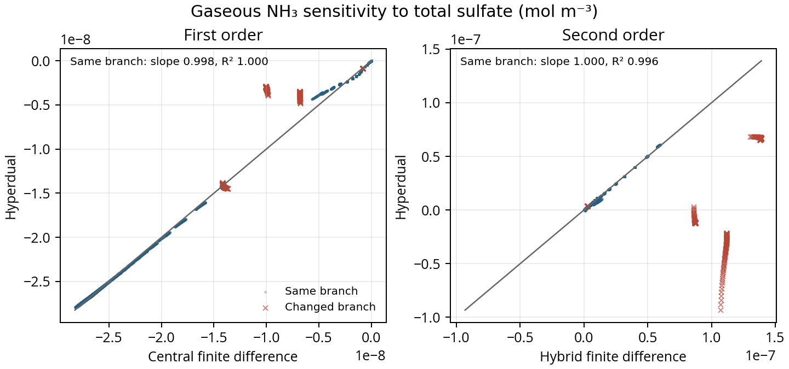
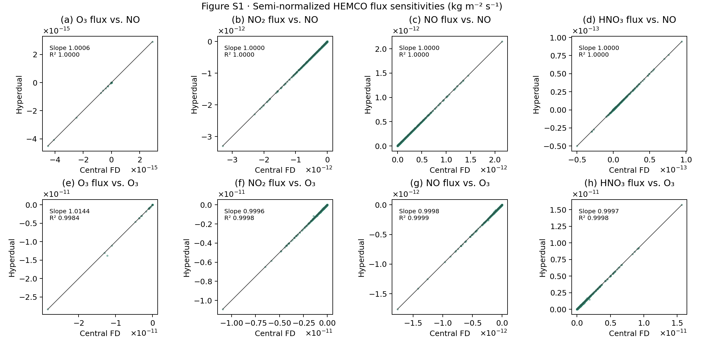
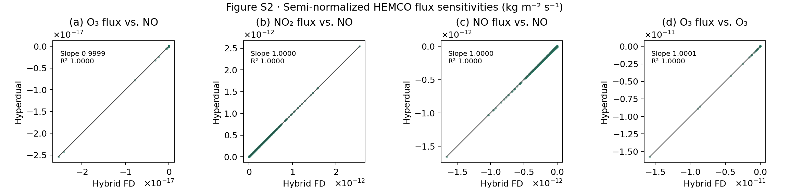
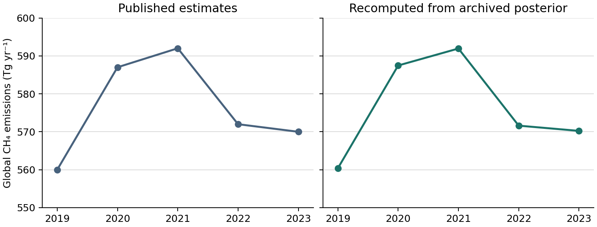
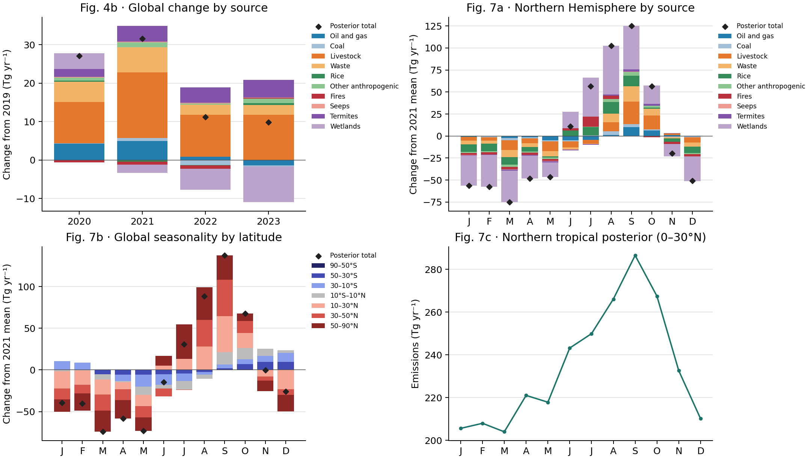

GEOS-Chem 论文复现对比报告
核对日期为 2026-11-27。报告沿用 FireEarth paper_replicates 的实验总表、逐图核对、差值与证据格式。整篇独立复现要求重跑论文的关键实验及其对照，并完成相同时间、空间、单位和筛选口径的图表比较。用作者归档的模型输出重画图表，记录为后处理复算。
总表
| 论文 | 全文实验 | 已经核对的结果 | 整篇复现仍需完成 |
|---|---|---|---|
| Akinjole 等（2026）GEOS-Chem-hyd | Classic 14.0.0-rc.3 与作者 hyd 1.1.0。4°×5°、72 层、MERRA-2。2019-07-01 的 24 小时对比、2019 年 8 月四周、季节试验和独立 ISORROPIA-II | Figs. S1–S3 原实验重跑完成，16 组回归斜率和 R² 均匹配论文显示精度。三维 NOₓ 对照已用作者代码开始积分 | 24 小时梯度和其他三维图表待验收。作者包中的跨月初值需核对。论文 · 源码 · 运行配置和初值 |
| Pendergrass 等（2023）CHEEREIO 1.0 | Classic 14.0.2，2°×2.5°，24 成员，2018 年末自旋与预同化，2019 年逐周反演 | Figs. 3–6 全部从论文归档的数值输出重画。年排放增加 6.47%，论文为 6.5% | 归档中的示例配置日期与论文 Table 2 不同。完整 LETKF 从头运行及原始 TROPOMI 筛选仍待验证。论文 · 代码 · 数值归档 |
| Pendergrass 等（2025）CHEEREIO 1.3.1 | Classic 14.1.1，2°×2.5° MERRA-2，四组各 32 成员。两套湿地先验分别做排放优化和排放加浓度优化 | 五年后验全球总量和 Table 1 的 13 项后验值全部复算，均与论文整数值一致。另重算 Fig. 4b 和 Fig. 7 的最佳后验部分 | 卫星读取已验证。完整反演仍需锁定论文使用的湿地先验、初扰动强度文件和随机初始化。论文 · 代码 · 配置与后验排放 |
服务器的 [local path] 有 2018-01-01 至 2024-01-01 每天的 A1、A3cld、A3dyn、A3mstC、A3mstE 和 I3，六类各 2192 个文件。服务器已有 Classic 14.1.1。Akinjole 的 4°×5°、72 层按原实验保留，7 月气象从 GEOS-Chem 公共输入库补，CEDS v2021-06 和大部分化学与排放数据复用服务器。CHEEREIO 采用集合卡尔曼滤波，Akinjole 采用正向超对偶数。严格使用 GC-adjoint 的候选见文末。 GEOS-Chem 公共输入数据
Akinjole 等（2026）
原实验矩阵
| 论文图表 | 原始实验与对照 | 本次状态 |
|---|---|---|
| Figure 1 | 方法示意 | 阅读对照 |
| Figs. 2–6、Tables 1–2 | 2019-07-01 至 07-02，SO₂、NOₓ、异戊二烯，三类超对偶扰动及对应有限差分。Table 1 为一阶，Table 2 为二阶。NOₓ 的方法比较还用 50% 与 100% | 5% NOₓ 的三个原始运行已开始积分，其他 10 个独立算例已提交依赖作业 |
| Fig. 7 | 同一 24 小时窗口，标准 Classic 与 hyd。论文性能使用 Derecho 的 128 核 | 原始 Classic 14.0.0-rc.3 和 HEMCO 3.5.0 已取得，已提交同一节点用 16 核依次计时的依赖作业。硬件和线程数会影响比值 |
| Fig. 8 | 2019-08-01 至 08-29，四个周段依次继承前段重启，比较 O₃、PM₂.₅、NH₄⁺、生物源有机气溶胶的一阶和二阶响应 | 待跑 |
| Figs. S1、S2、S4–S7 | 单个排放步、气溶胶灵敏度、2019 年 2 月、5 月、11 月各一周 | S1 和 S2 共 12 个 20 分钟原始运行已全部完成。其余已核对作者配置索引 |
| Fig. S3 | 297 K、77% RH，101×101 个总铵和总硝酸盐组合。对总硫酸盐扰动 ±5%，对照气相 NH₃ 的一阶和二阶半归一化敏感度 | 已完成。硫酸盐是每次扫描的 64 个扰动方向组合之一。原图，补充材料第 4 页 |
Fig. S3 结果
| 阶数及样本 | 论文斜率 | 本次斜率 | 论文 R² | 本次 R² |
|---|---|---|---|---|
| 一阶，全部点 | 1.01 | 1.009078 | 0.995 | 0.994569 |
| 一阶，正负扰动中求解分支相同 | 1.00 | 0.998376 | 1.000 | 0.999614 |
| 二阶，全部点 | 0.26 | 0.258260 | 0.195 | 0.194958 |
| 二阶，正负扰动中求解分支相同 | 1.00 | 1.000040 | 0.996 | 0.996453 |
10,201 个气相 NH₃–硫酸盐比较点中有 404 个跨越 ISORROPIA 求解分支。二阶比较的 R² 从全部点的 0.195 升到分支相同点的 0.996。三次扫描使用作者原始程序和输入，正负扰动由程序提供的 HYDMODE、INCMODE、PERT 环境变量设置。作业 352796、352811_0、352811_1 全部结束。回归数值 · 诊断代码

Figs. S1–S2 结果
Fig. S1 的 NO 和 O₃ 两个初始浓度扰动，各完成超对偶、+1% 和 −1% 三个 20 分钟运行。复算在 46×72 个格点提取 HEMCO 船舶羽流诊断中的 O₃、NO₂、NO 和 HNO₃ 通量。作者配置里的 _Total 诊断在超对偶输出中混入部分未扰动源的实部，所以用承担浓度响应的 _Ship 字段做同口径对照。8 个面板的斜率与 R² 全部匹配论文显示精度。最偏离 1:1 的 (e) 是 O₃ 通量对 O₃ 初值，斜率 1.01444、R² 0.998423，论文显示 1.01 和 0.998。本次拟合包含全部水平格点，报告原始截距供核对。 论文 Fig. S1 · 回归 CSV · 复算脚本

Fig. S2 比较超对偶的二阶分量和混合有限差分。NO 初值扰动 ±1%，O₃ 初值扰动 ±0.01%。四个面板的斜率在 0.9999235–1.0001453，R² 都大于 0.9999985，匹配原图的 1.00 和 1.000。S1 和 S2 的 12 个 Slurm 子作业 352830_0 至 352830_11 均正常结束，且输出了四个 HEMCO 分量。 论文 Fig. S2 · 回归 CSV

三维运行记录
三维案例用作者归档的 e-h/hyd run、forward run 与 backward run 驱动原样编译。运行副本更新 NCAR 路径，并填入 HEMCO 闪电数据路径所需的原生 MERRA-2 分辨率。三组一致读入作者 2019-07-01 初值和服务器 CEDS。初次运行 352806 在第一个化学时间步附近发生段错误。将 KMP_STACKSIZE 从 128 MB 提到 384 MB 后，诊断作业 352813 和前后扰动的试跑 352814 都至少到达模式时间 00:20。24 小时作业 352817 和 352820 使用同样的栈设置，尚无可供 Tables 1–2 验收的完整日平均诊断。 本机三维运行脚本
2026-11-27 08:42（北京时间），超对偶已积分至模式时间 08:10，正、负有限差分均至 06:20。作者包中 Figs. 2–6 的 32 份驱动按 SHA-256 去重后为 13 份。首批三个完成后，作业 352846 会复算 Tables 1–2 的 NO₂、O₃ 和 PM₂.₅ 共六项。作业 352841 等待这三个模式运行结束，再执行其余 10 份已编译驱动，覆盖 SO₂、异戊二烯和 50%/100% NOₓ。Fig. 7 的标准模式与 hyd 均已编译，等待作业 352843 依次计时。 日平均对比脚本 · 其余 24 小时运行脚本 · 计时运行脚本
S1 和 S2 的作者包指定 20 分钟窗口和 HEMCO 的末步输出。继承 24 小时 HISTORY.rc 的日频浓度诊断会触发 History_ReadCollectionData，随后清理路径出现段错误。运行副本的 HISTORY 只启用了末步重启，保留作者 HEMCO 设置和原始模型驱动。 本机补充实验运行脚本
完整的作者初值与配置包已通过 Zenodo MD5 6906ea5e024c41997d71093a53a3db7d 核对。归档里 2、5、7、8、11 月的五个 restart 同为 SHA-256 073bdd0f74356a52f490143f29d304a36e0e954eea4d4f22cecfd159d7df8011，NetCDF 的内部时间都是 2019-07-01。这为 7 月试验提供了日期相符的输入。8 月与季节试验需要核对论文原运行是否特意采用共同初值。 作者配置和初值
Pendergrass 等（2023）
论文先做 4 个月集合自旋，再按 Table 2 从 2018-11-01 同化至 2020-01-01，设置 24 个成员、168 小时同化窗和 500 km 局地化。2018 年 11–12 月是调整初期，正则化参数 γ 为 5，2019 年正式窗口为 1。归档的 ens_config_CH4.json 的起止日期分别是 2019-05-01 和 2020-07-01。原实验用 SRON 科学产品 2.2.0，服务器的混合和业务产品各有独立版本。三个论文归档覆盖格点配对观测、全球先验和 24 成员后验 HEMCO 通量，均通过归档 MD5 核对。 Table 2 和 §4 · 作者归档
| 对比项 | 论文 | 本次 | 本次减论文 |
|---|---|---|---|
| 2019 年全球后验相对先验增加 | 6.5% | 6.4745% | −0.0255 个百分点 |
| 12 月先验 XCH₄ 偏差 | −16.1 ppb | −16.179 ppb | −0.079 ppb |
| 12 月先验偏差空间标准差 | 12.3 ppb | 12.011 ppb | −0.289 ppb |
| 12 月后验 XCH₄ 偏差 | +1.2 ppb | +1.133 ppb | −0.067 ppb |
| 12 月后验偏差空间标准差 | 10.6 ppb | 10.264 ppb | −0.336 ppb |
年排放取 52 周全球通量，网格面积来自归档 AREA。12 月比较在每个格点先平均每个周窗的模式减观测值，并使用 CHEEREIO 1.0 归档示例中的 50 个原始检索阈值，保留 1481 个格点。空间标准差的最大差值为 0.336 ppb。 诊断脚本 · 指标 JSON · 周排放 CSV
| 对照图 | 论文 | 从作者归档数值重画 |
|---|---|---|
| Fig. 3，年均 XCH₄ 和观测数 | 论文原图 | 观测均值和检索次数 |
| Fig. 4，全球周序列 | 论文原图 | 浓度和排放 |
| Fig. 5，12 月排放空间分布 | 论文原图 | 先验、后验和集合标准差 |
| Fig. 6，12 月模式减卫星 | 论文原图 | 用相同色标的先验和后验偏差 |


Pendergrass 等（2025）
四组 JSON 都从 2018-01-01 开始集合自旋，2018-05-01 起正式积分，2018-05-29 起同化。论文以 15 天窗口每 5 天推进。终点按照归档原值记录。
| 湿地先验 | 优化状态量 | 成员 | 归档积分终点 | 归档后处理终点 |
|---|---|---|---|---|
| LPJ-MERRA2 | 排放 | 32 | 2023-12-25 | 2023-12-31 |
| LPJ-MERRA2 | 排放和浓度 | 32 | 2024-01-01 | 2024-01-01 |
| WetCHARTs | 排放 | 32 | 2023-12-25 | 2020-12-25 |
| WetCHARTs | 排放和浓度 | 32 | 2024-01-01 | 2024-01-01 |
WetCHARTs 排放组的后处理配置提前三年结束，使用该配置生成全窗口图表前需要核对原处理命令。 论文方法 · 作者四组配置
服务器的 satellite/TROPOMI/CH4/blended-tropomi-gosat-methane 镜像含同化期 28,858 个轨道文件、覆盖 2042 天。窗口中唯一无轨道的 2021-08-04 在公开 S3 目录也没有文件。归档 v1.3.1 的原始读取函数用独立的 NumPy 1.23.5 环境读通了 2018-05-29 和 2023-12-30 的两个轨道，分别筛得 455 和 1189 个有效陆地检索。服务器也已找到 WetCHARTs v1.3.1 九成员高性能子集及 GFEI v2。作者 JSON 指向的 agg_control_CH4_HEMCO_diagnostics_gmd_paper.nc 是集合初扰动强度的二维权重。本次取得的 2023 控制归档有 52 个时间样本，尚无证据确认作者生成该权重的聚合方法及随机种子。 卫星资料原始目录 · 作者配置与初值
检验湿地先验时，服务器九成员 WetCHARTs 2019 通量积分为 148.960 Tg/年，论文为 148 Tg/年。论文链接中的 NASA GMAO 2019 年 LPJ 年度文件积分为 157.327 Tg/年，离论文 LPJ 的 193 Tg/年 相差 35.673 Tg/年。作者 HEMCO 实际指向另外一个多年度 LPJ_mmch4e_MERRA2_1980-2022.nc，需确认它的版本和前处理后才能投入整篇复现。 论文 Table 1 · WetCHARTs v1.3.1 · NASA GMAO 原始文件目录
| 全球 CH₄ 排放，Tg/年 | 论文 | 本次 | 本次减论文 |
|---|---|---|---|
| 2019 | 560 | 560.391 | +0.391 |
| 2020 | 587 | 587.466 | +0.466 |
| 2021 | 592 | 591.939 | −0.061 |
| 2022 | 572 | 571.616 | −0.384 |
| 2023 | 570 | 570.236 | +0.236 |
归档 NetCDF 的通量变量没有 units 属性。按 HEMCO 的 kg m⁻² s⁻¹ 约定，用 2°×2.5° 的半极区格点面积积分，按每月天数加权年均，以 365 天换算成年化通量。五个年度总量和 Table 1 的 13 个后验量都回到论文的整数显示精度。2020 年若直接积分 366 天，得到 589.076 Tg。这解释统一年化口径与日历全年累积的差别。2023 年人为、自然排放分别是 391.956 与 178.281 Tg/年。重建的全球湿地平均季节循环在 9 月达到最高。 论文 §3 和 Table 1 · 年度 CSV · Table 1 后验 CSV · 月循环 CSV · 诊断脚本

Fig. 4b 的最佳后验分解得到 2020 年比 2019 年高 27.075 Tg/年，其中畜牧、废弃物和湿地分别贡献 10.718、5.300 和 4.091 Tg/年。重画 Fig. 7 各面板的最佳后验部分时，以格点跨纬度边界的面积比例划分纬带。2021 年北半球与北热带的后验峰值均出现在 9 月，与论文一致。Fig. 7c 复算的 0–30°N 峰值是 286.57 Tg/年，论文图读值约 305 Tg/年。改按中心位于 0–30°N 闭区间的完整格点计入，峰值为 306.12 Tg/年。按面积比例划分的结果保留在图中，原作者的选格与聚合口径尚待确认。原图还包含两套先验、集合范围和 GRACE-FO 数据。 论文 Fig. 4 · 论文 Fig. 7 · 部门年变化 CSV · 北半球部门月变化 CSV · 纬带月变化 CSV



整篇还需对照 Fig. 2 的 XCH₄ 空间偏差、Fig. 3 的观测和逐成员曲线、Fig. 4–8 的完整区域归因、淹水和冷暖季比较。当前文件提供最佳后验的月网格通量，逐成员后验和先验需从四组实验取得。作者的 2018 甲烷平流层初值、损耗率、缩放 OH、四组 JSON 和参考后验均已下载并通过归档 MD5 核对。 作者归档
严格 GC-adjoint 候选
- Tang 等（2023） 属于 GC-adjoint 正/反向试验。已有 Table 1 全球 CEDS CO 的一项复算和一个 24 小时 PBL 初值梯度 benchmark。整篇还需恢复 Fig. 4–5 的两套气象模拟、Fig. 6 的排放梯度、Fig. 7 OSSE 及 Fig. 8–9 的 MOPITT 同化与月初值。公开源码包无论文运行目录和预处理区域排放包。 论文 · 前次核对
- Dedoussi 等（2024） 属于 GC-adjoint 化学试验。原研究使用 v35f。除了 Figs. 3–4 的 1 小时梯度，整篇还需论文的正向 UCX 比较和多时段平流层敏感度。已确认源代码归档，精确的旧 GEOS-5 气象与原化学重启尚未齐。 论文 · 作者源码
- Yu 等（2021） 使用 GC-adjoint v35 的甲烷 OSSE，先比较均匀误差和空间误差的先验，再对照不同输送设定、优化方法和 1 天至 1 个月的窗口。主实验用 2018 年 8 月北美 0.25°×0.3125° GEOS-FP，2°×2.5° 全球正向提供三小时边界。公开论文提供代码 DOI，但归档服务器从本机返回 HTTP 403，未取得作者代码、25 年自旋初值和原始 OSSE 数据。 论文 · 作者代码归档
复跑
在 EarthModelHub 根目录运行。输入归档在 input/raw/papers/，Akinjole 模式执行与诊断在 run/tasks/akinjole_2026_geoschem_hyd/。已生成的图表在本报告目录。
report_dir=docs/papers/models/geoschem/paper_replicates
prefix/mamba/envs/hub/bin/python "$report_dir/recompute_pendergrass_2025.py" \
input/raw/papers/pendergrass_2025_cheereio/posterior_best_estimate_ch4_emis.nc "$report_dir/tables"
prefix/mamba/envs/fair/bin/python "$report_dir/plot_pendergrass_2025.py"
prefix/mamba/envs/fair/bin/python "$report_dir/recompute_pendergrass_2023.py" \
input/raw/papers/pendergrass_2023_cheereio "$report_dir"
prefix/mamba/envs/fair/bin/python "$report_dir/check_akinjole_2026_s3.py" \
run/tasks/akinjole_2026_geoschem_hyd/isorropia_s3 "$report_dir"
prefix/mamba/envs/fair/bin/python "$report_dir/check_akinjole_2026_hemco.py" \
run/tasks/akinjole_2026_geoschem_hyd/s1_s2 "$report_dir" S1
prefix/mamba/envs/fair/bin/python "$report_dir/check_akinjole_2026_hemco.py" \
run/tasks/akinjole_2026_geoschem_hyd/s1_s2 "$report_dir" S2